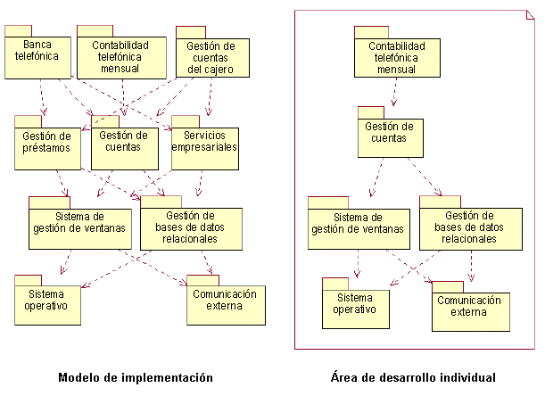
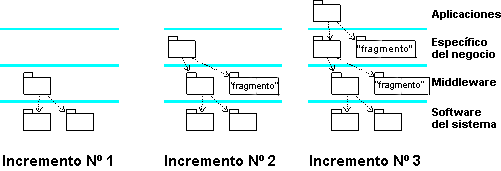

| Concepto: Espacios de trabajo de desarrollo y de integración |
 |
|
| Elementos relacionados |
|---|
|
Los sistemas suelen implementarlos equipos de implementadores individuales que trabajan juntos y en paralelo. Para que esto sea posible, son necesarios varios espacios de trabajo, por ejemplo:
Espacio de trabajo de desarrolloLos implementadores individuales tienen un espacio de trabajo de desarrollo en el que pueden implementar los subsistemas y los elementos contenidos de los que son responsables. Para compilar, enlazar, ejecutar y probar el código del subsistema, son necesarias otras partes del sistema. Normalmente, los implementadores no necesitan todo el sistema para desarrollar el subsistema. Por lo general, basta con tener los subsistemas necesarios para compilar, enlazar y ejecutar el subsistema en el espacio de trabajo de desarrollo. Estos subsistemas no tienen que residir en ninguno de los espacios de trabajo de desarrollo privados de un implementador como copias físicas; sino que pueden residir en un depósito común con los subsistemas liberados internamente. Cuando los implementadores compilan la ubicación exacta de otros subsistemas, la definen en un archivo independiente; por ejemplo, un archivo make. Ejemplo: El subsistema Contabilidad telefónica mensual (en un sistema bancario) necesita los subsistemas que importa directa o indirectamente el subsistema para compilar, enlazar y ejecutar sus elementos. En este caso, serán necesarios seis de los diez subsistemas para los implementadores del subsistema Contabilidad telefónica mensual.  El espacio de trabajo de desarrollo para los implementadores del subsistemas Contabilidad telefónica mensual Espacio de trabajo de integración para el equipoA veces, puede haber un equipo de implementadores que desarrollan de forma simultánea el mismo subsistema. En este caso, los implementadores deben integrar los elementos en un subsistema para poder difundirlos en la integración del sistema. La integración del equipo suele realizarse en un espacio de trabajo de integración de subsistemas dedicado a la integración del trabajo de miembros del equipo individuales. Un miembro del equipo actúa como integrador y es el responsable del espacio de trabajo de integración y de su rendimiento. Espacio de trabajo de integración para integradores en el nivel de sistemaLos integradores del sistema tienen un espacio de trabajo de integración en el que pueden añadir uno o varios elementos de software o uno o varios subsistemas a la vez, creando de este modo compilaciones que, después, se prueban para la integración.  Un espacio de trabajo de integración para los integradores del sistema en el que los subsistemas se añadan en cada incremento de integración |
© Copyright IBM Corp. 1987, 2006. Reservados todos los derechos. |